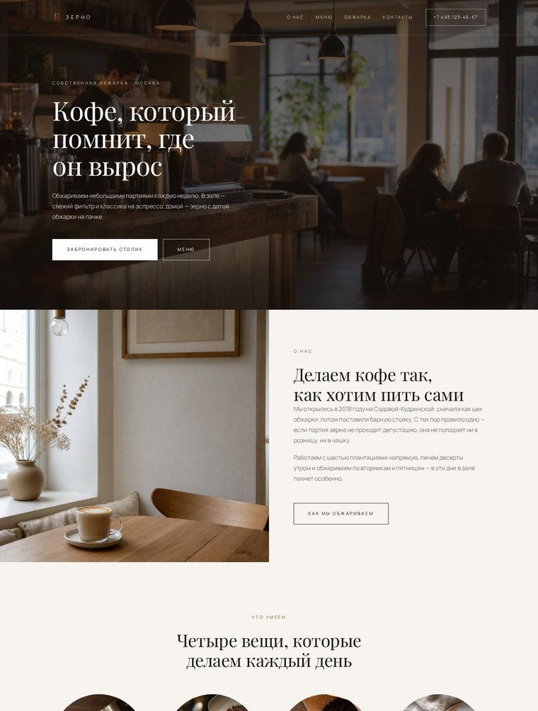
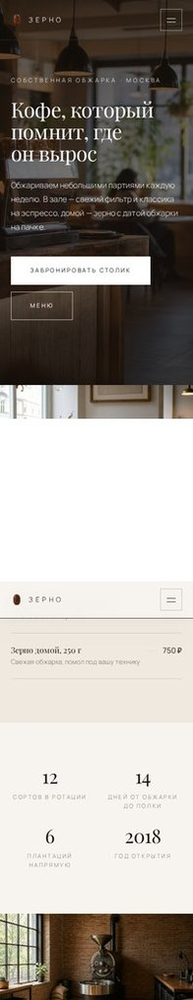

01Кофейня «Зерно»
Тёплая редакционная подача: серифный заголовок, фото во всю ширину, меню в две колонки
Лендинг для обжарки с барной стойкой: меню с ценами, две фото-полосы, история места, форма брони столика.
Как проверено: три движка и семь ширин, контраст по WCAG, маска телефона, прогон клавиатурой.
Моя роль: структура, дизайн-система, постановка задач агенту, ревью кода, исправление дефектов.
Открыть лендинг